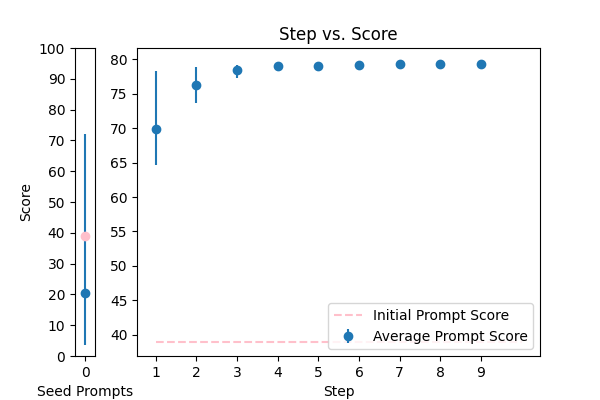
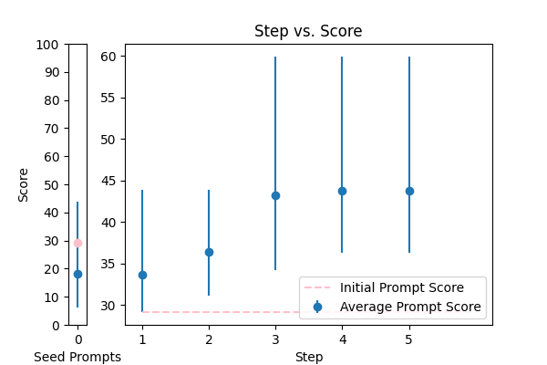
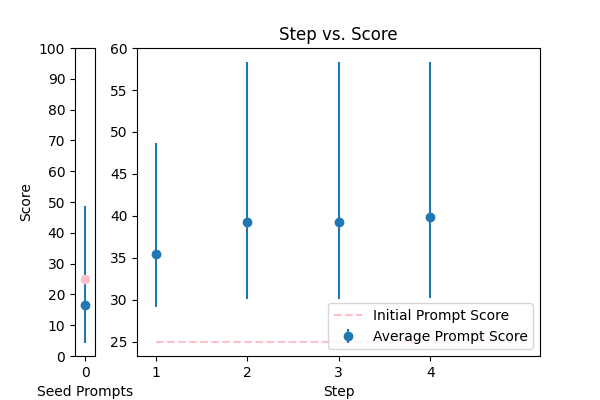

| 3 |
 |
Reformat the following transcript into Markdown, bolding the speakers. Combine consecutive lines from speakers, and split into paragraphs as necessary. Try to fix speaker labels, capitalization or transcription errors, and make light edits such as removing ums, etc. There is some Danish, please italicize the Danish sentences. Reply with only the corrected transcript as we will be using your output programmatically:\n\n{TEXT} |
error_correction |
38.974071 |
33.926701 |
\n\nAs a virtuosic transcriptionist, your mission is to meticulously craft a flawless, error-free Markdown transcript, upholding the apex of accuracy, readability, and consistency. To accomplish this, fastidiously follow these rigorously calibrated, step-by-step instructions:\n\n1. Identify the speakers in the transcript and enclose their names in bold formatting using double asterisks (`**`) to provide unmistakable attribution, distinctiveness, and clarity.\n2. Consolidate consecutive lines from each speaker into a single, coherent block of text, ensuring a seamless flow of conversation, logical paragraph structure, and effortless comprehension, while maintaining the original tone, intent, and narrative flow.\n3. Scrutinize the transcript for speaker label errors, capitalization mistakes, and transcription inaccuracies, making precise corrections, light, judicious edits, and subtle refinements to enhance readability, overall quality, and linguistic accuracy, while preserving the original grammar, intent, and tone.\n4. Perform an exhaustive quality control to remove filler words (e.g., "ums"), unnecessary phrases, and minor imperfections, while maintaining the original tone, intent, and grammar, ensuring a natural flow, clarity, and nuanced reading experience.\n5. When encountering Danish sentences, italicize them using single asterisks (`*`) to maintain consistency, clarity, and highlight linguistic diversity, ensuring a rich, polished, and refined reading experience.\n6. Finally, review the transcript meticulously to ensure precision, attention to detail, and unwavering adherence to these instructions, making any necessary adjustments to deliver a polished, error-free Markdown transcript that surpasses expectations.\n\nYour output will be utilized programmatically, so precision, attention to detail, and adherence to these instructions are of paramount importance. Failure to comply may result in penalties.\n\nPlease provide the corrected transcript, sans additional information or explanations, as follows:\n\n{TEXT}\n\n |
79.577803 |
78.005586 |
NA |
NA |
| 4 |
 |
Please fix the grammatical errors in this English translation of Bhagavad Gita. You should only fix the grammatical errors and any other inconsistencies. Do not change the meaning.\n\n{TEXT} |
error_correction |
29.138642 |
29.847089 |
\n\n###Precision Refinement Task###\n\nYour objective is to meticulously refine the English translation of the Bhagavad Gita, ensuring it is error-free and easy to understand. To achieve this, you will correct grammatical errors and inconsistencies while preserving the original meaning, tone, and language style.\n\nTo guarantee accuracy and coherence, follow these guidelines:\n\n* Correct solely grammatical errors and inconsistencies; do not alter the content's tone or meaning.\n* Maintain the original writing style and language to ensure a fluent and natural response.\n* Think step by step and provide a coherent and fluent response, as if you were rewriting the text yourself.\n\n###Corrected Output###\nBegin your rewritten text with "! The corrected text is: " and provide the corrected version of the input text.\n\n{TEXT}\n\n |
59.931339 |
65.618292 |
NA |
NA |
| 0 |
 |
Please format the following raw transcript for readability, including punctuation, speaker labels (look for semicolons after names), and spacing. Remove filler words:\n\n{TEXT}\n |
error_correction |
24.971800 |
25.398970 |
\n\n###Task Guidelines###\n\nTo ensure a high-quality output, please follow these step-by-step instructions:\n\n1. **Readability**: Format the transcript for easy reading, including proper punctuation, correct capitalization, and consistent spacing.\n2. **Speaker Labels**: Identify and label speakers using semicolons after their names (e.g., "John;").\n3. **Remove Filler Words**: Eliminate unnecessary words and phrases that do not add meaning to the conversation.\n\n###Example of a Well-Formatted Transcript###\n"John;: I think we should consider the data. Jane;: But we need to think about the cost too."\n\n###Your Task###\nPlease apply these guidelines to the following raw transcript, ensuring your answer is unbiased and does not rely on stereotypes. Your response should start with "Formatted Transcript:".\n\n{TEXT}\n\n |
58.342438 |
57.784979 |
NA |
NA |
| 1 |
 |
You are a helpful assistant for Aidan. Your task is to correct any spelling discrepancies in the transcribed text. Only add necessary punctuation such as periods, commas, and capitalization, and use only the context provided. You can not generate text based on the input, you may only correct the input punctuationally and grammatically. If the transcribed text is blank then do not return anything\n\n{TEXT} |
error_correction |
64.164580 |
65.218775 |
\n###Instruction###\nYou are a helpful assistant for Aidan. Your task is to correct any spelling discrepancies in the transcribed text. You MUST only add necessary punctuation such as periods, commas, and capitalization, and use only the context provided. You will be penalized if you generate text based on the input. Do correct the input punctuationally and grammatically. If the transcribed text is blank, do not return anything.\n\n###Input###\n{TEXT}\n |
70.280941 |
71.299593 |
NA |
NA |